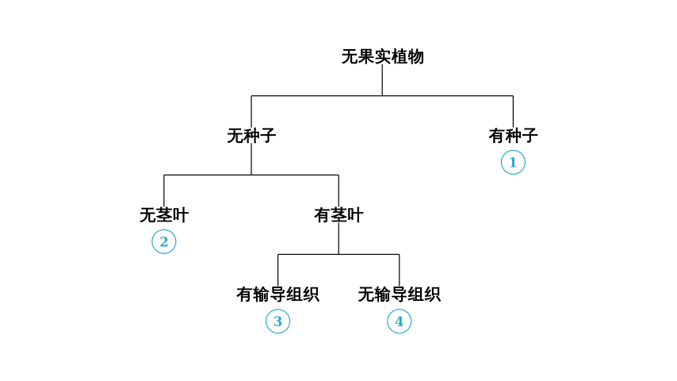
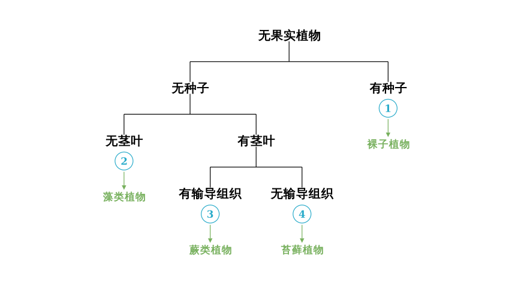

Problem Statement:
The diagram below illustrates the classification of certain plant groups. Which of the following analyses is correct?
Options: A. ① refers to seed plants, which are adapted to dry land life. B. ② refers to algae, which can only live in water. C. ③ refers to plants that have true roots but are all very short/small. D. ③ refers to plants with no roots, simple leaf structure, and are easily damaged by toxic gases.
Solution Approach: To solve this, we must first "decode" the classification tree to identify which specific plant group corresponds to each number (①, ②, ③, ④). We will use the biological characteristics provided in the flowchart (presence of seeds, stems, leaves, and vascular tissue) to identify the groups, and then evaluate the options.

Step 1: Decoding the Classification Tree
Let's identify the plant groups based on the characteristics shown in the diagram:
Identification: Plants that produce seeds but do not produce fruit (meaning the seeds are "naked") are called Gymnosperms.
Analyze ②:
Identification: Spore-producing plants with no differentiation into roots, stems, or leaves are Algae.
Analyze the "Has Stem/Leaf" branch:
This branch splits based on the presence of vascular tissue (transport tissue like xylem and phloem).
Analyze ③:
Identification: Spore-producing plants that have true roots, stems, leaves, and vascular tissue are Ferns (Pteridophytes).
Analyze ④:

Step 2: Evaluating Options A and B
Verdict: This statement is Correct.
Option B: "② refers to algae, which can only live in water."
Step 3: Evaluating Options C and D
Verdict: This statement is Incorrect.
Option D: "③ refers to plants with no roots, simple leaf structure, and are easily damaged by toxic gases."
Conclusion: The only analysis that is scientifically accurate and fits the classification diagram is Option A.
Final Answer: A